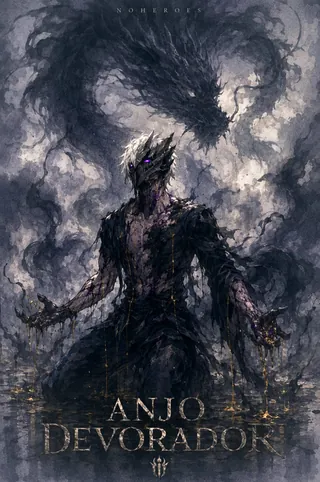
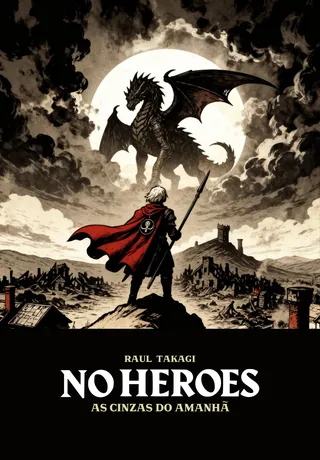

Edição expandida
Anjo Devorador
- Webnovel, publicada em capítulos
- Capítulo novo todo dia
- Em português (a língua original) e em inglês
- Leitura grátis na Webnovel, a plataforma oficial
- Se o projeto crescer, pode ganhar edição física
Capítulo novo todo dia
Em inglês: Devouring Angel
Abre a Webnovel, a plataforma oficial. Não precisa de conta para ler.
O mundo está virando cinzas. Entre o rugido de dragões e a corrupção dos Voidrins, a humanidade se agarra a uma última e misteriosa esperança de sobrevivência. No centro deste caos, o jovem Vitalista Azuos desperta em uma floresta, sem memórias e sem destino. Enquanto luta para não ser consumido por um mundo que morre, Azuos busca um propósito — mas quanto mais perto ele chega da verdade, mais percebe que seu passado esquecido pode ser uma ameaça maior do que os monstros que cruzam os céus.
Anjo Devorador e As Cinzas do Amanhã contam a mesma história. O que muda é o tamanho e o formato.

Edição expandida

Edição compacta
E-book: fica no seu inventário depois da compra. Livro físico: vendido pela Uiclap, com o prazo da plataforma.
Sim. Anjo Devorador e As Cinzas do Amanhã contam a história de Azuos em Caelum. Uma é a edição expandida, em webnovel; a outra, a edição compacta, em romance.
O tamanho e o formato. Anjo Devorador é a edição expandida: sai em capítulos, todo dia, na Webnovel. As Cinzas do Amanhã é a edição compacta, em romance: uma saga com 5 livros planejados, e o volume 1 já está à venda.
Pela webnovel, que é a versão completa e atualizada todo dia. O livro é a versão compacta, para quem prefere romance.
Por enquanto, não. O foco é a webnovel; se o projeto crescer, Anjo Devorador pode ganhar uma edição física. Quem quer a história no papel hoje encontra o volume 1 de As Cinzas do Amanhã.
Anjo Devorador sai em português, a língua original, e em inglês, com o título Devouring Angel. A versão em inglês é traduzida com auxílio de IA, como o autor explica na própria Webnovel. As Cinzas do Amanhã está em português.
O sistema de poder (magos vs vitalistas), as cúpulas/barreiras, e a sensação constante de que o espetáculo é só uma camada — por baixo tem política e ameaça antiga.
Fantasia sombria: consequências, dilemas e um mundo que não recompensa ingenuidade.
Caelum, suas nações, clãs, lendas e personagens.
Daqui para baixo há informações sobre o mundo, os personagens e as facções que podem soar como spoilers leves, mas não atrapalham a leitura da obra.
Capítulo 00 completo · PT e EN Enciclopédia do universo O que todo mundo em Sublicus sabe: o mundo, as nações, as energias, os Elos, as criaturas e a Guilda."Caelum não é um mundo. É um campo de guerra entre monstros, memórias e ambições."
Em ACDA, o mundo não é cenário — é um personagem. Caelum foi forjado por guerras, criaturas colossais e segredos enterrados. Aqui, magia não é fantasia: é maldição ou redenção.
Este é o solo onde Azuos desperta, marcado, caçado e escolhido para algo que ainda não entende.Bem-vindo a Caelum. Onde cada nome carrega uma maldição.
O mundo se chama Caelum. A história se passa em Sublicus, o continente conhecido, onde ficam os reinos, os clãs e as cidades. Há outras terras além dos oceanos, mas atravessá-los é mortal, e poucos retornam.
No horizonte, visível de qualquer ponto do continente, ergue-se uma Torre imensa que desaparece no céu. Todos podem vê-la, mas ninguém sabe o que ela é. Ela é chamada de “a Semente do Mundo”.
Este mapa não representa apenas terras e fronteiras. Ele registra os limites do que ainda sobrevive. Caelum foi moldado por eras de conflito entre dragões, nações humanas e forças que precedem a própria história. Cada região marcada aqui carrega resquícios de guerras esquecidas, cidades soterradas e pactos jamais quebrados. Nada em Caelum é estável. Fronteiras mudam. Nações caem. E o mapa… nunca permanece o mesmo por muito tempo.
Nenhuma cidade sobreviveria a céu aberto. As grandes cidades se protegem sob cúpulas e barreiras mágicas que impedem a entrada de monstros e dragões. Enquanto a cúpula resistir, a cidade vive.
O maior terror de Caelum: colossais, poderosos e inteligentes. Um soldado comum não consegue derrotar um. Eles não negociam; destroem tudo em seu caminho.
Os monstros são classificados pela Classe: Fera, Monstro, Demônio e Voidrin. Os Voidrins nascem da Energia Negativa, têm inteligência igual ou superior à humana e são as criaturas mais perigosas que se conhecem.
A Nação da Diversidade e Liberdade: uma democracia multicultural onde humanos, elfos, magos, vitalistas e inertes convivem. A capital, Lunaris Fortuna, é a cidade mais próspera do continente.
Kaleidos não é unificada. É um mosaico de culturas, crenças e contradições. Aqui, bairros funcionam como pequenas nações, cada um com suas próprias regras, líderes e conflitos internos. A convivência não nasce da harmonia, mas da necessidade. Unidos apenas pelo ódio comum à tirania de Aeon, os habitantes de Kaleidos vivem em constante tensão, equilibrando liberdade e caos.
A Nação da Ordem e Perfeição: uma teocracia da Pureza, liderada por uma Suma Sacerdotisa. Lá, os inertes são o povo puro, e os vitalistas são perseguidos como impuros. Aeon e Kaleidos já se enfrentaram em guerras e seguem rivais.
Aeon se ergue sob o dogma absoluto. Suas catedrais não foram construídas para inspirar fé, mas para impor obediência. Cada estrutura monumental serve como lembrete constante de que questionar é heresia e que a ordem precede a liberdade. A luz que emana de Aeon não aquece. Ela observa. Em Aeon, não há espaço para dúvida. A fé é lei. E a lei… é eterna.
Capital de Kaleidos e a cidade mais próspera do continente.
O lar do Clã da Lua, onde Azuos é acolhido e começa a treinar.
Azuos desperta perto da Floresta Negra e sobrevive à Floresta Lupina antes de chegar ao Clã da Lua.
Além das nações, Sublicus tem quatro grandes clãs, cada um com seu território. Juntos, eles mantêm a paz entre Kaleidos e Aeon, e boa parte da política e das guerras do continente gira em torno deles.
Clãs: Lua (assassinos), Sol (luxo/sabedoria), Feras (instinto), Runas (magia antiga).
Clãs em guerra fria: símbolos, títulos, arena e hierarquia que definem a saga.
Entre os quatro grandes clãs de Caelum, o Clã da Lua é lembrado pela precisão e pelo silêncio. Especialistas em espionagem, rastreamento e assassinato, forjaram sua reputação como os olhos ocultos de Kaleidos. Silenciosos, pacientes e implacáveis, os filhos da Lua aprenderam a transformar o próprio silêncio em arma.
O Clã do Sol é o mais antigo entre os grandes clãs de Caelum. São mestres do conhecimento arcano, formando magos eruditos e guerreiros disciplinados. Administram a maior biblioteca de Kaleidos. Na guerra, são lanças de fogo. Na paz, são guardiões da palavra.
Nenhum clã carrega tradição tão profunda quanto o Clã das Runas. Mestres da magia rúnica e arcana, são responsáveis pela maior parte da magitecnologia conhecida. Armas encantadas, barreiras defensivas e rotas de transporte nascem de suas forjas. Onde há progresso, há o toque das Runas.
O Clã das Feras é lembrado tanto por sua força quanto pela alegria de seu povo. São druidas e guerreiros de vigor extremo, muitos com traços animalescos herdados de rituais antigos. Fundaram a Guilda de Aventureiros. Mesmo em tempos de guerra, são eles que lembram aos povos que viver também é motivo para brindar.
As Guildas de Aventureiros são organizações independentes, reconhecidas em todo o continente. Não servem a nações nem a clãs. A hierarquia é definida por colares de prestígio, que variam do Rank E ao Rank S. Ser aventureiro não é apenas um ofício. É pertencer a uma irmandade que sobreviveu à ruína de reinos.
Há quem diga que o culto nasceu como uma seita, rezando às criaturas do vazio em troca de poder. Com o tempo, deixaram de se ajoelhar… e aprenderam a comandar. Hoje sussurra-se que movem nações como marionetes. Ninguém sabe quantos são. Nem onde estão.
"Poder não é privilégio. É herança, fardo... ou ruína."
Em Caelum, magia não é "truque" nem "dom gratuito". Toda manifestação mágica vem de mana excedente — energia que transborda do corpo e da alma. O problema é que esse poder sempre cobra: cansaço, risco, corrupção ou consequências irreversíveis.
Toda magia vem de três energias. A Energia Vital (mana) é o combustível das habilidades e dos feitiços; todos a possuem. A Energia Positiva e a Energia Negativa nascem das emoções: a positiva eleva, a negativa corrompe, e acumulá-la é perigoso e condenado.
As pessoas se dividem pela Energia Vital excedente. Os Inertes não têm excedente e seguem caminhos físicos. Os Magos têm o bastante para aprender magia. Os Vitalistas não aprendem magia: nascem com uma única habilidade, só deles.
A habilidade de um Vitalista se chama Aspecto, e nenhum se repete entre duas pessoas. Um Vitalista pode tomar a habilidade de outro; por isso, e por guerras antigas, eles são temidos, odiados e caçados. Muitos se passam por Magos.
O poder: vitalistas nascem com dom único e perigoso — reorganizando hierarquias.
Quem cultiva forja Elos dentro de si, também chamados de Núcleos ou Chacras: centros de energia que acumulam poder. O mundo conhece até cinco; um sexto é só especulação. Pessoas e criaturas são medidas por essa contagem.
É proibida e condenada em todo o continente. Não usa mana, e sim rituais e sacrifícios, por isso qualquer pessoa pode praticá-la.
A profissão se escolhe pela aptidão, porque a escolha errada pode ser fatal. De combate: Guerreiro, Colosso, Monge, Ladino e Caçador. Mágicas: Mago, Druida e Sacerdote.
Dica de leitura: quando um personagem usa magia, observe o "custo". Se algo parece forte demais sem consequência, desconfie: em Caelum, quase sempre existe um preço escondido.
"A pergunta não é o que você faz com poder... é o que ele faz com você."
"Alguns mitos estão vivos. E eles lembram quem você é."
Conta-se sobre um demônio que lutou tanto que nem a morte ousou vencê-lo. Onde passa, deixa apenas silêncio, sangue e corpos sem nomes. Dizem que vaga pelo continente em busca de oponentes dignos. Ninguém jamais retornou para confirmar.
Entre as lendas de Caelum, poucas são tão raras quanto a do Bom Dragão. Ele aparece apenas quando o destino encontra uma alma incomum. Se ele existe, não é para ser seguido. É para ser temido com reverência: um presságio de que o mundo está prestes a mudar.
No topo da evolução draconiana existem os chamados Dragões Barões Anciãos — seres que ultrapassaram os limites da própria espécie. Devoram demônios. Devoram Voidrins. Devoram homens. Encontrar um Ancião é compreender, em segundos, o que é insignificância.
Nos dias de fogo e cinzas, acreditava-se que os draconianos haviam sido extintos. Mas os velhos cantos falam de Valdaryon — uma cidade erguida sob a terra. Seja mito ou verdade, ninguém jamais viu o lugar.
Conta-se que a Floresta Negra nasceu do pranto de um anjo. Árvores respiram. Raízes observam. O solo consome. Nem mesmo dragões se atrevem a sobrevoar suas copas.
"Ciência não morreu. Ela foi devorada pela magia."
A magitecnologia une conhecimento arcano e necessidade prática. Em Caelum, progresso e desigualdade caminham lado a lado.
A civilização depende da união entre magia e tecnologia. Cristais de mana alimentam máquinas, muralhas e as próprias cúpulas, e equipamentos encantados fazem parte do cotidiano.
Chamamos de artefatos rúnicos todo objeto capaz de canalizar, armazenar ou alterar o fluxo de mana por meio de inscrições arcanas. Alguns artefatos carregam efeitos passivos permanentes. Outros exigem ativação consciente, sacrifícios energéticos ou condições específicas.
Zepelins mágicos não são meros veículos aéreos. Foram projetados para operar em altitudes que nem mesmo dragões ousam alcançar. Sustentados por núcleos de mana e selos gravitacionais, são capazes de transportar cargas sobrenaturais e tropas inteiras.
Montarias vivas são criaturas domesticadas ou vinculadas por pactos druidicos, rúnicos ou vitais. Entre elas estão grifos, hipogrifos e wyverns. Montar uma criatura viva não é dominação. É sobrevivência compartilhada.
Com as estradas tomadas por dragões, os portais tornaram-se o principal meio de deslocamento seguro entre grandes centros. Falhas nesses sistemas podem resultar em desaparecimentos, fusões corporais ou deslocamentos temporais. Viajar por um portal é rápido. Mas nunca totalmente seguro.
Relógios rúnicos não medem o tempo. Eles o registram. O mais temido deles é o Relógio de Draugh, o Morto-Vivo. Ali, a Era do Caos nunca terminou. Relógios rúnicos são memória. E memória, em Caelum, pode matar.
"Caelum não quer heróis. Só almas fortes o bastante para sobreviver a ele."
Azuos emerge da floresta marcado e sem memória. Lunaris Fortuna parece segura — mas o sistema de poder dos clãs não aceita anomalias. O espetáculo começa, as alianças se formam e o equilíbrio frágil do mundo começa a rachar.
A verdade por trás da Marca Negra começa a emergir. Forças que deveriam ser aliadas mostram suas fissuras. A energia negativa avança — e as luzes de Lunaris Fortuna deixam de ser símbolo de esperança.
A Legião Negra não é apenas um exército — é uma ideia. E ideias não morrem com espadas. O confronto que todos temiam chega, e Caelum descobre que seus maiores inimigos talvez não venham de fora.
Detalhes do Ato IV serão revelados em breve. Acompanhe as atualizações da saga.
O ato final da saga. O destino de Caelum e de todos que nele habitam será selado aqui.
Toque num selo para conhecer o personagem.
Criaturas de Caelum, pela Classe (Fera, Monstro, Demônio, Voidrin) e pelos Elos.
As Cinzas do Amanhã — Vol. 1, a edição compacta em romance.
Comprar o e-book — R$ 14,97 Livro físico (Uiclap)